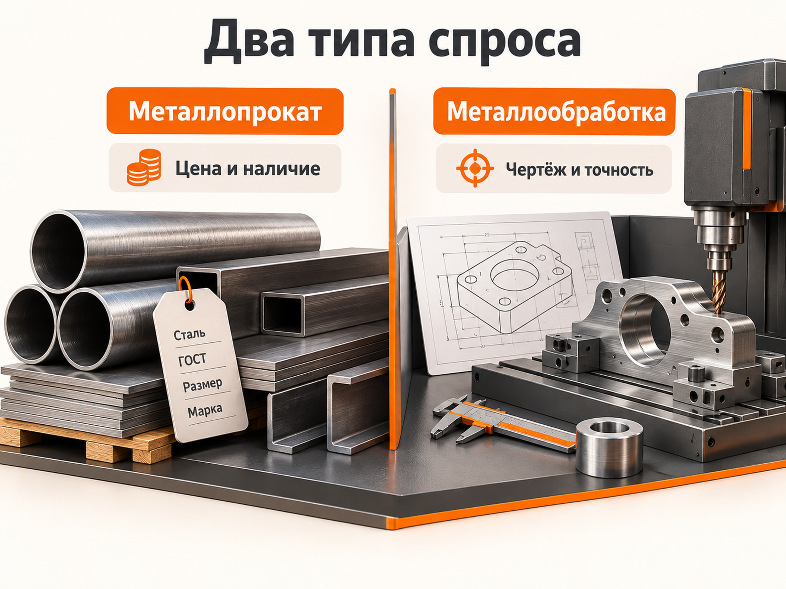
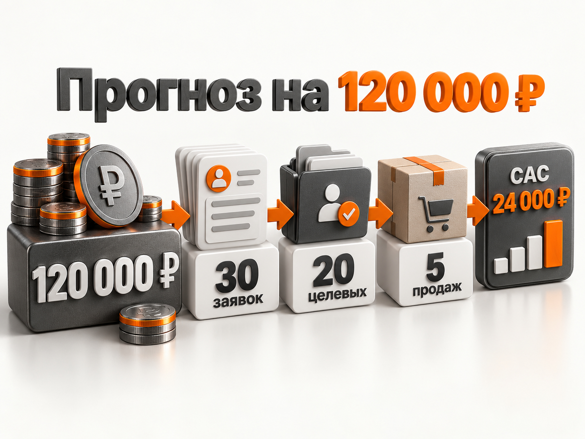
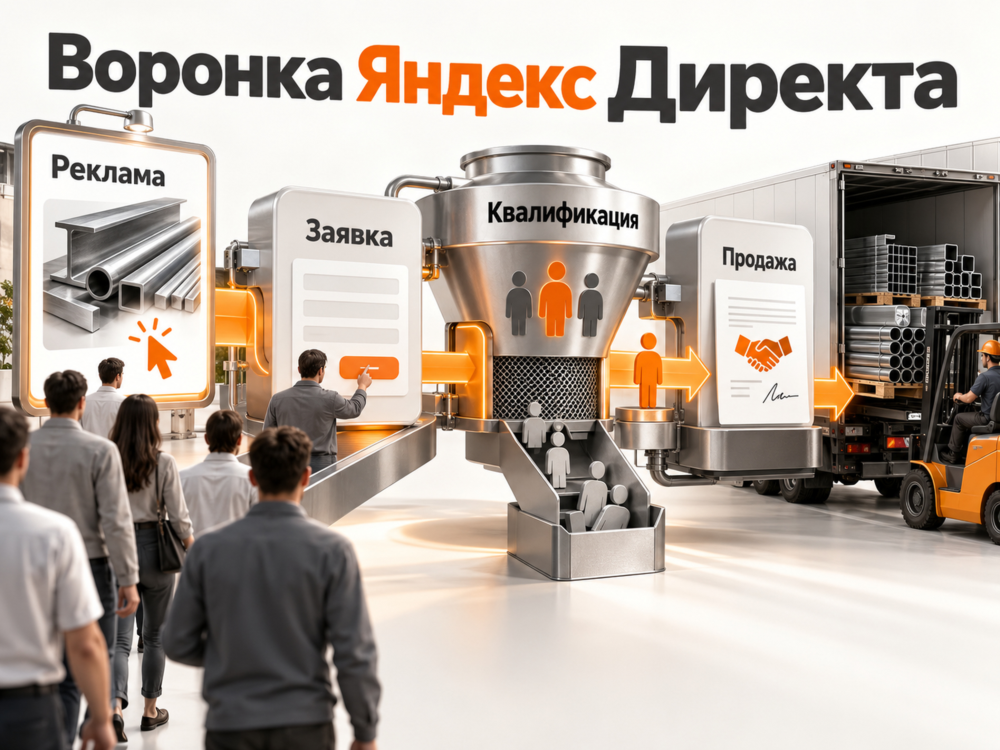
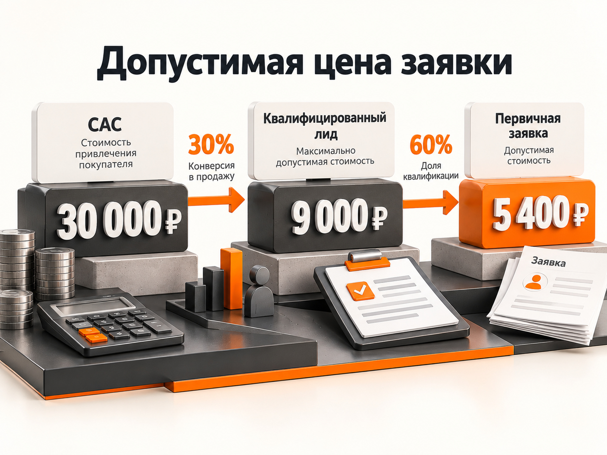

Блог о платном трафике
Продвижение металлопроката и металлообработки через Яндекс Директ
Продвижение металлопроката и металлообработки через Яндекс Директ лучше начинать с коммерческих поисковых запросов, отдельных предложений для оптовых покупателей и предприятий, а также аналитики до реальных продаж. Основная задача рекламы здесь - привлечь не просто обращения, а B2B-клиентов с подходящими объёмами закупки или производственными заказами.
Для первоначального прогноза можно закладывать 2 500‑6 500 ₽ за первичную заявку и примерно 4 000‑11 000 ₽ за квалифицированный B2B-лид. Это расчётные ориентиры, а не средние показатели рынка. Фактическая стоимость зависит от региона, ассортимента, конкуренции и требований к заказу.
Для регионального продвижения нескольких приоритетных направлений я бы рассматривал рекламный бюджет 100 000‑150 000 ₽ в месяц. Ниже разберём, как его распределять, какие объявления использовать и как оценивать результат по продажам.

Металлопрокат и металлообработка - два разных рекламных спроса
Продажу металла со склада и изготовление деталей по чертежам лучше рекламировать отдельно. Хотя обе услуги относятся к металлургической и производственной тематике, требования покупателей отличаются.
Металлопрокат относится преимущественно к товарному спросу. Покупатель часто заранее знает нужный материал, размер и марку стали.
Примеры запросов:
- труба профильная 40х40;
- лист горячекатаный 5 мм;
- арматура А500С;
- балка двутавровая;
- лист 09Г2С 10 мм;
- нержавеющий лист;
- металлопрокат оптом.
Здесь важны стоимость тонны или единицы продукции, наличие, минимальная партия, склад, сроки отгрузки, сертификаты и доставка.
Металлообработка относится преимущественно к спросу на производственные услуги. Заказчику требуется выполнить конкретную технологическую операцию или изготовить изделие.
Примеры запросов:
- лазерная резка металла;
- гибка листового металла;
- плазменная резка;
- токарные работы;
- фрезерные работы;
- обработка на ЧПУ;
- изготовление деталей по чертежам;
- серийное производство деталей.
В этом случае покупателю важнее возможности оборудования, допустимая толщина материала, точность обработки, минимальная партия, сроки изготовления и возможность отправить чертёж для расчёта.
Даже если компания одновременно продаёт металлопрокат и оказывает услуги металлообработки, рекламные предложения и посадочные страницы лучше разделить.

Как привлекать B2B-клиентов на металлопрокат
Для привлечения корпоративных покупателей недостаточно получать заявки по общим запросам вроде «купить металл». Необходимо показывать рекламу людям, которым требуются конкретные материалы, производственные услуги и поставки для бизнеса.
В металлопрокате основными заказчиками могут быть:
- строительные организации и подрядчики;
- производственные предприятия;
- изготовители металлоконструкций;
- машиностроительные компании;
- монтажные организации;
- металлобазы и оптовые покупатели.
Решение о закупке часто принимают снабженцы, инженеры, технологи и руководители производства.
Поэтому запросы могут содержать не только название продукции, но и марку стали, ГОСТ, размер, объём партии и требования к поставке.
Например, запрос «лист 09Г2С 10 мм купить» сообщает о потребности точнее, чем «металл купить». Такой пользователь уже определился с характеристиками материала.
Для привлечения B2B-клиентов я бы выделял коммерческие сегменты по продукции, объёмам закупки, географии и условиям поставки.
При этом ключевое слово «оптом» само по себе не гарантирует, что посетитель представляет юридическое лицо. Квалифицировать покупателя всё равно необходимо.
Примеры рекламных объявлений для металлопроката и металлообработки
Рекламное объявление должно отвечать на конкретный запрос покупателя. Общие предложения вроде «Высокое качество и выгодные цены» практически ничего не сообщают о товаре или производственных возможностях.
Вот как можно формулировать объявления для разных задач.
| Поисковый запрос | Пример заголовка объявления |
|---|---|
| Лист 09Г2С 10 мм купить | Лист 09Г2С 10 мм - запросите цену за партию |
| Труба профильная 100х100х5 | Профильная труба 100х100х5 для оптовых закупок |
| Лазерная резка нержавейки | Лазерная резка нержавейки по чертежам |
| Токарные работы ЧПУ | Токарная обработка ЧПУ - расчёт по чертежу |
| Металлопрокат оптом | Металлопрокат для предприятий - расчёт поставки |
Это примеры формулировок, а не универсальные готовые объявления. Перед запуском необходимо проверить фактическое наличие товаров, возможности оборудования и другие обещания.
Для металлопроката в тексте объявления полезно указывать условия поставки, минимальную партию, возможность резки в размер или получение актуального предложения.
Для металлообработки сильнее работают конкретные технологические возможности и понятный следующий шаг: отправка чертежа, спецификации или технического задания для расчёта.
Главное правило: объявление должно показывать покупателю, что компания способна решить именно его производственную или закупочную задачу.
Что показывают реальные кейсы Яндекс Директа
Единой нормальной стоимости заявки на металлопрокат не существует. Опубликованные результаты отличаются из-за ассортимента, географии, настроек кампаний и способов учёта лидов.
В кейсе агентства «Синапс», опубликованном в июне 2026 года, компания из сферы металлопроката и металлообработки получила 58 заявок. Из них 42 обращения пришли из Мастера кампаний.
Авторы приводят стоимость заявки 2 668 ₽ и сообщают о преимуществе автоматизированного формата над классическим Поиском. Однако опубликованных данных недостаточно для независимой проверки сравнительной стоимости по всем кампаниям.
Поэтому этот результат полезен прежде всего как подтверждение того, что в промышленной нише стоит тестировать несколько рекламных форматов, а не заранее выбирать один.
Другой пример касается производителя металлоконструкций. В кейсе, опубликованном на Callibri в октябре 2025 года, стоимость квалифицированного лида снизилась с 7 872 до 4 208 ₽, а количество подходящих обращений выросло на 70%.
Проблема заключалась в нецелевых обращениях. Поставщики металла, перевозчики и другие компании пытались предложить производителю собственные услуги.
После разделения контактов отдела продаж и снабжения рекламная система стала получать более подходящие сигналы для оптимизации.
Есть и пример производителя нестандартных металлоконструкций «Простор», опубликованный Яндексом 24 августа 2026 года. В проекте проверяли узкоспециализированный спрос и использовали объявления с конкретными предложениями. Средний CTR достиг 8,9%, но подтверждённая стоимость квалифицированного лида в опубликованных результатах отсутствует.
Эти кейсы показывают три важные особенности промышленной рекламы:
- Автоматические кампании могут приносить значительную часть обращений.
- Стоимость обычной заявки нельзя напрямую сравнивать со стоимостью квалифицированного лида.
- Точные предложения под конкретную производственную потребность важнее универсальных рекламных формулировок.
Для полноценной оценки необходимо учитывать не только количество обращений, но и подготовленные коммерческие предложения, состоявшиеся продажи и рекламные расходы на привлечение одного заказчика.

Каким должен быть сайт для привлечения B2B-заказчиков
Для металлопроката нужен каталог, в котором пользователь сможет быстро найти нужную категорию и характеристики продукции.
На товарных страницах полезно показывать:
- размеры и марки стали;
- цену или возможность запросить актуальный прайс;
- наличие на складе либо условия поставки;
- минимальный объём заказа;
- сертификаты и соответствие стандартам;
- условия доставки и отгрузки;
- дополнительные услуги, включая резку в размер.
Для металлообработки посадочная страница должна отвечать на другие вопросы: что можно изготовить, на каком оборудовании, с какими материалами и размерами работает производство, как быстро получить расчёт.
Особенно важен способ отправки технического задания.
Вместо формы только с именем и телефоном полезнее предусмотреть запрос расчёта с возможностью приложить чертёж или спецификацию.
Например, форма для производственного заказа может содержать:
- название компании и контактные данные;
- вид обработки;
- материал и размеры детали;
- количество изделий или объём партии;
- требуемые сроки;
- файл с чертежом.
Не стоит делать все поля обязательными. Человек должен иметь возможность быстро отправить запрос, даже если часть характеристик ещё уточняется.
В результате отдел продаж получает больше информации для квалификации обращения, а заказчику не приходится объяснять задачу с самого начала.
Как я бы строил Яндекс Директ
В 2026 году для основных задач продвижения можно использовать Единую перфоманс-кампанию. Она позволяет управлять поисковыми объявлениями, размещением в РСЯ и товарными форматами.
Но для металлопроката и металлообработки я бы не начинал с охвата всех товаров и услуг. Сначала нужно выбрать направления, где есть коммерческий спрос, достаточная маржинальность и возможность выполнить заказ.
Поиск под металлопрокат
Поисковые кампании целесообразно структурировать по основным группам продукции.
Например:
- Листовой прокат: горячекатаный, холоднокатаный, оцинкованный, рифлёный, нержавеющий.
- Трубы: профильные, круглые, электросварные, бесшовные.
- Сортовой прокат: арматура, круг, квадрат, шестигранник.
- Фасонный прокат: швеллер, уголок, двутавр.
Дополнительно можно выделять коммерческие запросы с указанием цены, партии, доставки, конкретной марки стали и размеров.
Не нужно создавать отдельную кампанию под каждый размер трубы. Дробление оправдано, когда отличаются рекламная экономика, предложение, география или посадочная страница.
Поиск под металлообработку
В металлообработке логичнее выделять направления по технологии:
- лазерная резка;
- плазменная резка;
- гибка металла;
- токарная обработка;
- фрезеровка;
- сварка;
- обработка на ЧПУ;
- изготовление деталей по чертежам.
Если оборудование, производственные возможности и маржинальность направлений различаются, их лучше анализировать раздельно.
Например, запрос на лазерную резку тонкого листа и запрос на изготовление сложной детали на ЧПУ могут приводить к одному производству, но требуют разных объявлений и посадочных страниц.
Товарные объявления
Для металлобазы с большим структурированным каталогом товарные объявления стоит включить в список основных рекламных гипотез.
Яндекс Директ позволяет формировать их на основе сайта, YML-фида или CSV-файла.
Такой формат подходит для продукции с понятными характеристиками: труб, листового проката, арматуры, швеллеров и других типовых позиций.
Но если основная услуга компании заключается в изготовлении индивидуальных деталей по чертежам, товарные объявления могут оказаться менее подходящими.
Мастер кампаний
Мастер кампаний я бы тестировал отдельно, не смешивая его результаты с поисковыми кампаниями.
В опубликованном кейсе металлопроката этот инструмент принёс 42 из 58 обращений. Но прежде чем считать его эффективнее Поиска, необходимо проверить стоимость именно квалифицированных заявок.
В отдельном отчёте следует сравнивать количество обращений, долю подходящих B2B-клиентов, коммерческие предложения и продажи.
РСЯ
Рекламную сеть Яндекса лучше запускать отдельно от Поиска.
В металлопрокате и металлообработке РСЯ можно использовать для проверки дополнительного спроса и повторного контакта с посетителями сайта.
Например, отдельно работать с пользователями, которые изучали определённую товарную категорию, смотрели производственные возможности или начинали оформление запроса.
Особое значение имеет ретаргетинг. В сложных B2B-продажах заказчик может несколько раз возвращаться к выбору подрядчика, пока согласует техническое задание, бюджет и поставку.
Семантика и поисковые запросы
В промышленной рекламе наиболее интересные запросы не всегда являются высокочастотными.
Человек может искать определённую позицию или услугу:
- лист 09Г2С 10 мм купить;
- труба 100х100х5 цена;
- лазерная резка нержавейки 3 мм;
- изготовление деталей из стали по чертежу.
Такие запросы часто точнее показывают коммерческую потребность, чем общие фразы.
Однако широкая семантика повышает риск нецелевых переходов.
Особое внимание нужно уделять запросам, связанным с вакансиями, обучением, покупкой станков, металлоломом, бесплатными чертежами и нормативной документацией без намерения заказать продукцию.
Если компания работает только с оптовыми покупателями, необходимо отдельно контролировать розничный спрос.
Минус-слова следует использовать с учётом конкретного ассортимента. Например, нельзя исключать все запросы со словом «чертёж», если предприятие изготавливает детали по чертежам.
После запуска я бы регулярно проверял отчёт «Поисковые запросы» в Яндекс Директе и сопоставлял фактические формулировки не только с кликами, но и с качеством поступивших обращений.
География продвижения металлопроката
При продаже металлопроката регион продвижения напрямую влияет на экономику сделки.
Даже качественная заявка может оказаться убыточной, если стоимость доставки делает предложение неконкурентоспособным.
Поэтому географию рекламы лучше определять по возможностям поставки:
- локальный регион вокруг склада;
- соседние регионы с выгодной логистикой;
- федеральные поставки для крупных партий.
В металлообработке ситуация может отличаться. Если производство выполняет сложные или высокомаржинальные заказы, привлечение клиентов из других регионов иногда экономически оправдано.
Главный принцип один: рекламировать следует не всю территорию, куда теоретически возможна доставка, а регионы с приемлемой экономикой заказа.
Аналитика должна учитывать качество B2B-лидов
В промышленной рекламе нельзя считать все обращения одинаково ценными.
Производственной компании могут писать не только потенциальные заказчики, но и поставщики сырья, перевозчики, соискатели, продавцы оборудования и другие подрядчики.
Формально такие обращения могут фиксироваться как конверсии.
Если рекламная стратегия обучается на всех контактах без разделения, она не получает достоверной информации о реальных потенциальных покупателях.
Поэтому в аналитике желательно различать как минимум первичные обращения, квалифицированные лиды и продажи.
Для металлообработки полезно учитывать дополнительный этап: получение технического задания и подготовку расчёта или коммерческого предложения.
Квалифицированным B2B-лидом я бы считал обращение, в котором подтверждена потребность в продукции или услуге, а требования заказчика в принципе соответствуют возможностям компании.
Для такой аналитики понадобятся Яндекс Метрика, учёт телефонных обращений, CRM и передача данных о качестве лидов.
Подробнее о механике передачи результатов продаж в рекламные системы я рассказывал в статье «Офлайн-конверсии в Яндекс Директе».

Какую стратегию использовать
На новом промышленном проекте я бы не переходил автоматически на оплату за конверсии.
Для устойчивой работы конверсионных стратегий нужен достаточный объём событий. В рекомендациях Яндекса фигурирует ориентир от 10 конверсий в неделю, а бюджет должен позволять получать необходимое количество целевых действий.
Если узкое направление металлообработки приносит всего несколько обращений в неделю, сильное дробление кампаний может ухудшить обучение.
На первоначальном этапе можно использовать стратегию привлечения кликов, параллельно настраивая цели и собирая статистику по качеству лидов.
Затем переходить к оптимизации по целевым действиям, если объём данных и экономика кампании это позволяют.
Когда несколько близких кампаний отдельно не набирают достаточно конверсий, имеет смысл рассмотреть пакетную стратегию. Но объединять направления только ради объёма статистики, игнорируя разницу в экономике, тоже не стоит.
Прогноз стоимости заявки и рекламного бюджета
Единой средней цены заявки для металлопроката и металлообработки нет. В разных проектах отличаются ассортимент, география, условия закупки, сайт и требования к качеству обращения.
Для предварительного расчёта я бы использовал следующую модель.
| Показатель | Расчётный ориентир |
|---|---|
| Стоимость первичной заявки | 2 500‑6 500 ₽ |
| Доля квалифицированных обращений | 60% |
| Стоимость квалифицированного лида | Примерно 4 000‑11 000 ₽ |
| Конверсия квалифицированного лида в продажу | 20‑30% |
Эти значения являются допущениями для медиаплана, а не подтверждёнными средними показателями российского рынка.
Как рассчитать бюджет от клика до продажи
Предположим, компания выделяет 120 000 ₽ непосредственно на рекламу в Яндекс Директе.
Для примера используем следующие условные показатели:
- средняя стоимость клика - 150 ₽;
- конверсия посетителя в заявку - 3,75%;
- доля квалифицированных обращений - 65%;
- конверсия квалифицированных лидов в продажи - 25%.
При таком расчёте 120 000 ₽ позволят получить примерно 800 переходов.
Если 3,75% посетителей оставят обращение, получится 30 заявок.
Из них около 20 могут оказаться квалифицированными. При конверсии в продажу 25% это примерно пять заказов.
Стоимость первичной заявки составит 4 000 ₽, а рекламные расходы на привлечение одного покупателя - около 24 000 ₽.
Это пример расчёта, а не прогноз гарантированного результата. Все исходные показатели, включая CPC и конверсии, здесь условные.
В модели не учтены оплата работы специалиста, дополнительные сервисы и налоги при пополнении рекламного кабинета. При финансовом планировании эти расходы нужно учитывать отдельно.
Осторожный сценарий
При CPL 6 500 ₽ бюджет 120 000 ₽ даст около 18 обращений.
Если квалификацию пройдут 60%, получится примерно 11 потенциальных B2B-клиентов.
При конверсии в продажу 20% можно рассчитывать приблизительно на две сделки.
Рекламная стоимость привлечения одного покупателя составит около 60 000 ₽.
Рабочий сценарий
При CPL 4 000 ₽ бюджет 120 000 ₽ даст 30 заявок.
Если около 65% обращений окажутся квалифицированными, компания получит примерно 20 подходящих лидов.
При конверсии в продажу 25% можно ожидать около пяти сделок.
Расчётная рекламная стоимость привлечения покупателя - около 24 000 ₽.
Сильный сценарий
При CPL 2 500 ₽ бюджет 120 000 ₽ даст 48 первичных обращений.
Если 70% окажутся квалифицированными, получится около 34 подходящих лидов.
При конверсии в продажу 30% это примерно десять заказов.
Рекламная стоимость привлечения покупателя составит около 12 000 ₽.
Здесь важно понимать, что результаты округлены и зависят от заданных конверсий. Это сценарии для оценки неопределённости, а не обещание конкретного количества продаж.
Какой бюджет закладывать на старт
При выборе стартового бюджета важнее количество рекламируемых направлений и доступный спрос, чем размер компании.
Я бы использовал следующие ориентиры:
| Рекламный бюджет в месяц | Что можно проверить |
|---|---|
| 60 000‑80 000 ₽ | Несколько узких групп горячих запросов |
| 100 000‑150 000 ₽ | Основные направления Поиска и дополнительный рекламный формат |
| 150 000‑300 000 ₽ и выше | Более широкий ассортимент и несколько регионов |
Это ориентиры на рекламный тест, а не обязательный минимальный бюджет Яндекса.
При небольшом бюджете я бы сосредоточился на нескольких товарных категориях или производственных услугах.
Запускать одновременно рекламу всех видов металлопроката, металлообработки, РСЯ, товарных объявлений и Мастера кампаний при ограниченных расходах нецелесообразно: данные окажутся слишком раздробленными.
Как рассчитать допустимую стоимость B2B-лида
Допустимую стоимость заявки нужно рассчитывать от экономики продаж конкретного предприятия, а не только от рекламных показателей конкурентов.
Предположим, компания готова потратить на привлечение одного нового покупателя максимум 30 000 ₽.
Из десяти квалифицированных лидов в продажи превращаются три, то есть конверсия составляет 30%.
Максимально допустимая стоимость квалифицированного лида:
30 000 × 30% = 9 000 ₽.
Если из всех первичных обращений квалификацию проходят только 60%, допустимая стоимость обычной заявки будет:
9 000 × 60% = 5 400 ₽.
Получается, при такой экономике первичная заявка дороже 5 400 ₽ уже выходит за установленный рекламный ориентир.
Но для другого предприятия, с более высоким средним заказом, маржинальностью или повторными закупками, допустимая стоимость привлечения может быть значительно выше.
При определении предельного CAC необходимо учитывать маржу, логистику, обработку заказа и другие переменные расходы. Оборот или выручка сами по себе не показывают прибыльность рекламы.

Основные ошибки при продвижении металлопроката
Самая распространённая стратегическая ошибка - рекламировать весь ассортимент и все производственные услуги без разделения по спросу и экономике.
Также стоит избегать следующих проблем:
- Направлять все объявления на главную страницу вместо конкретной категории или услуги.
- Оценивать рекламную кампанию только по количеству первичных заявок.
- Приравнивать звонки, скачивания прайса и реальные запросы на поставку к одинаковым конверсиям.
- Не учитывать предложения от поставщиков и других нецелевых посетителей.
- Запускать федеральную рекламу без расчёта логистики.
- Создавать большое количество самостоятельных кампаний без достаточного объёма конверсий.
- Не передавать в аналитику информацию о фактических продажах.
- Не проверять, какие категории продукции или виды обработки действительно приносят прибыль.
Для B2B-рекламы низкий CPL ещё не означает эффективность. Решающее значение имеет стоимость привлечения подходящего заказчика и прибыль от его сделки.
План запуска Яндекс Директа для металлопроката
Я бы рекомендовал запускать рекламу поэтапно.
- Определить приоритетные направления. Выбрать товары и услуги с достаточным спросом, маржинальностью и возможностью выполнять заказы.
- Рассчитать экономику. Определить допустимый CAC, стоимость квалифицированного лида и тестовый бюджет.
- Подготовить посадочные страницы. Для металлопроката - товарные категории, для металлообработки - страницы конкретных услуг с возможностью запросить расчёт.
- Настроить аналитику. Подключить Метрику, отслеживание заявок и звонков, CRM и квалификацию обращений.
- Запустить поисковую рекламу. Начать с наиболее коммерческих запросов и конкретных предложений.
- Проверить товарные объявления. Использовать их для подходящих товарных позиций из каталога.
- Отдельно протестировать Мастер кампаний. Сравнивать не только количество обращений, но и их качество.
- При необходимости подключить РСЯ. Начать с осмысленных аудиторий и ретаргетинга.
- Регулярно анализировать поисковые запросы и продажи. Исключать нецелевой трафик, проверять данные CRM и корректировать бюджет.
- Масштабировать прибыльные направления. Добавлять категории и регионы после подтверждения рабочей экономики.
Итог
Продвижение металлопроката и металлообработки через Яндекс Директ имеет смысл строить вокруг конкретного промышленного спроса. Для продаж металла важны характеристики продукции, объёмы закупки и логистика. Для металлообработки - технологические возможности производства, чертежи и сроки выполнения заказа.
Для первоначального планирования можно использовать расчётный CPL 2 500‑6 500 ₽ и тестовый рекламный бюджет от 100 000‑150 000 ₽ в месяц для нескольких приоритетных направлений. Но эти значения необходимо пересчитывать по реальным показателям конкретного проекта.
Главный критерий эффективности - сколько компания тратит на привлечение B2B-покупателя, который действительно заключает сделку.
Общие особенности промышленной рекламы подробнее рассмотрены в статье «Яндекс Директ для производства», а принципы работы с корпоративными заказчиками - в материале «Яндекс Директ для B2B».
Если необходимо рассчитать рекламный бюджет именно для вашего предприятия, можно обратиться ко мне с информацией об ассортименте, географии поставок и планируемых объёмах заказов. На основе этих данных я подготовлю предварительный медиаплан и предложу структуру рекламных кампаний.